I Connected a Desktop Phone to a FreeBSD Server, so Now I Can Call It
I turned a Panasonic KX-T2315 desk phone into a physical menu for my FreeBSD server. When I pick up the handset, the phone adapter calls Asterisk, waits for one digit, and triggers a predefined script on the FreeBSD server. This post covers the phone restoration, HT801 setup, Asterisk configuration, Lua dialplan, Python AGI dispatcher, and the full config download.
The basic flow looks like this:
[Panasonic KX-T2315 analog phone]
|
| FXS phone cable
v
[Grandstream HT801]
|
| SIP + RTP
v
[FreeBSD 14 + Asterisk]
|
| AGI
v
[Python dispatcher]
|
v
[Predefined server-side scripts]
What It Does Now
Right now, the phone works as a small command menu for the server. Button 4 fetches the latest FreeBSD news, generates a text-to-speech audio file, and plays it back through the handset at 1.2x speed. Other buttons can run predefined server-side scripts from the same allowlist, so keypad input never becomes shell input.
Old Phone, New Life
For this project, I bought a Panasonic KX-T2315 on eBay. It is an analog desk phone. It arrived heavily yellowed, which is typical for old plastic.
To clean it up, I disassembled the case, applied Oxycreme, placed the plastic parts in a transparent zip-lock bag, and left them in the sun for a couple of hours, following what I learned from this video.
Afterward, I washed everything thoroughly.
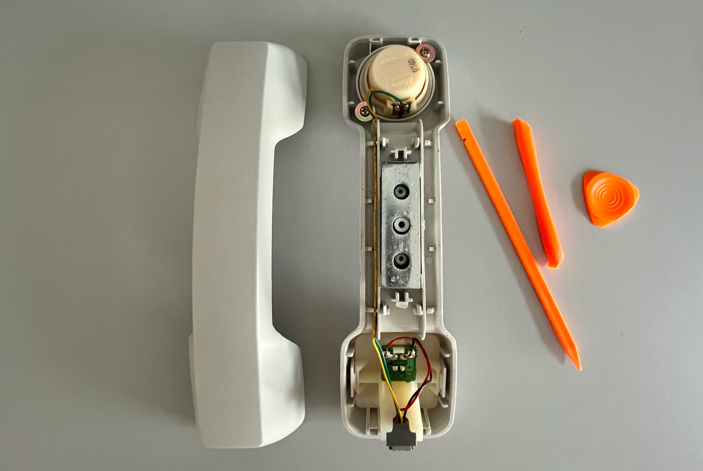
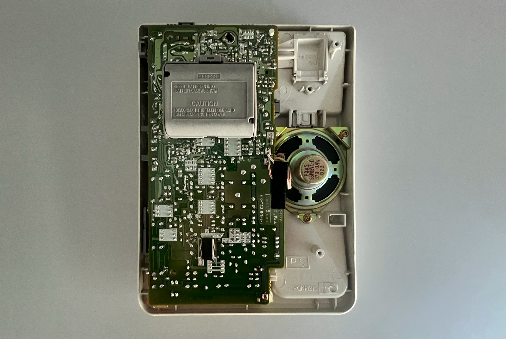
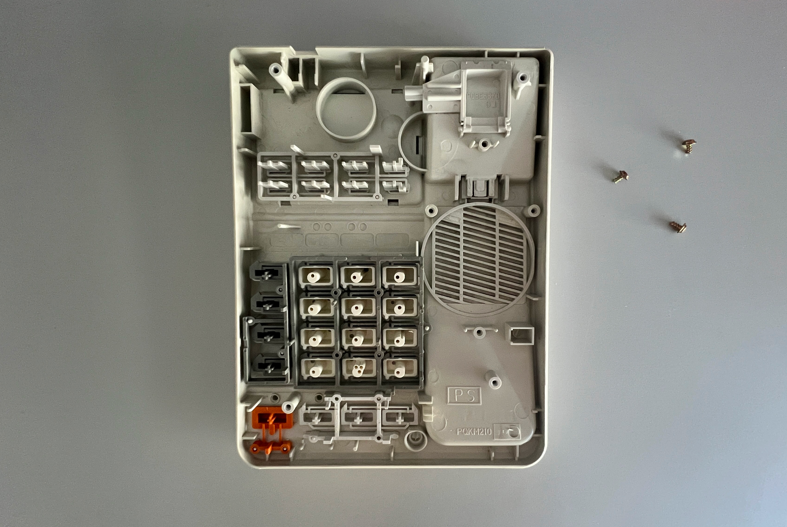
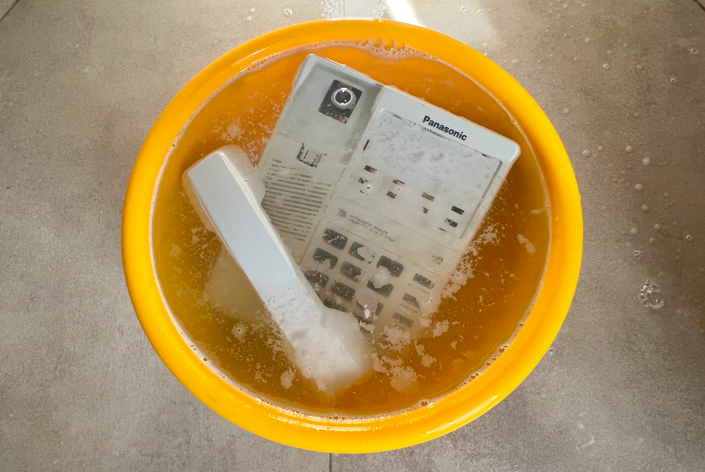
Turns out you can flip over an old paper card and find a fresh, clean white surface inside:
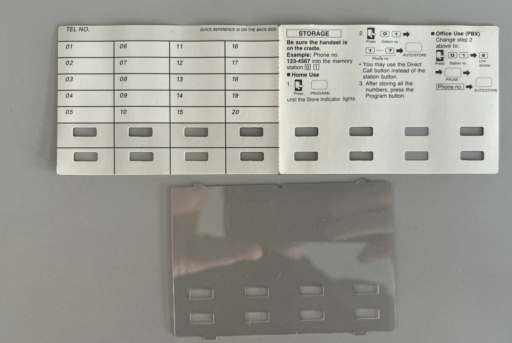
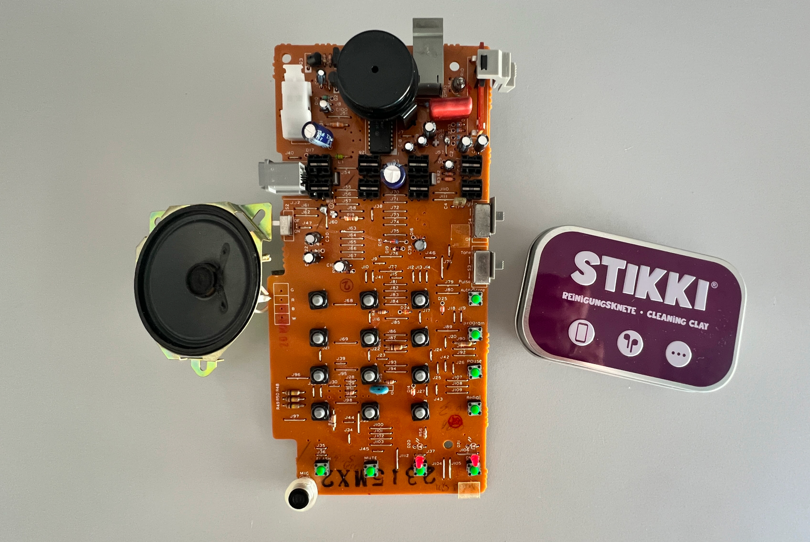
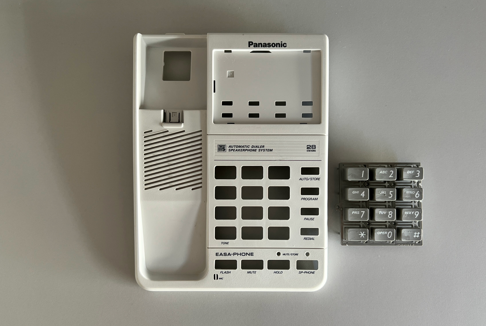
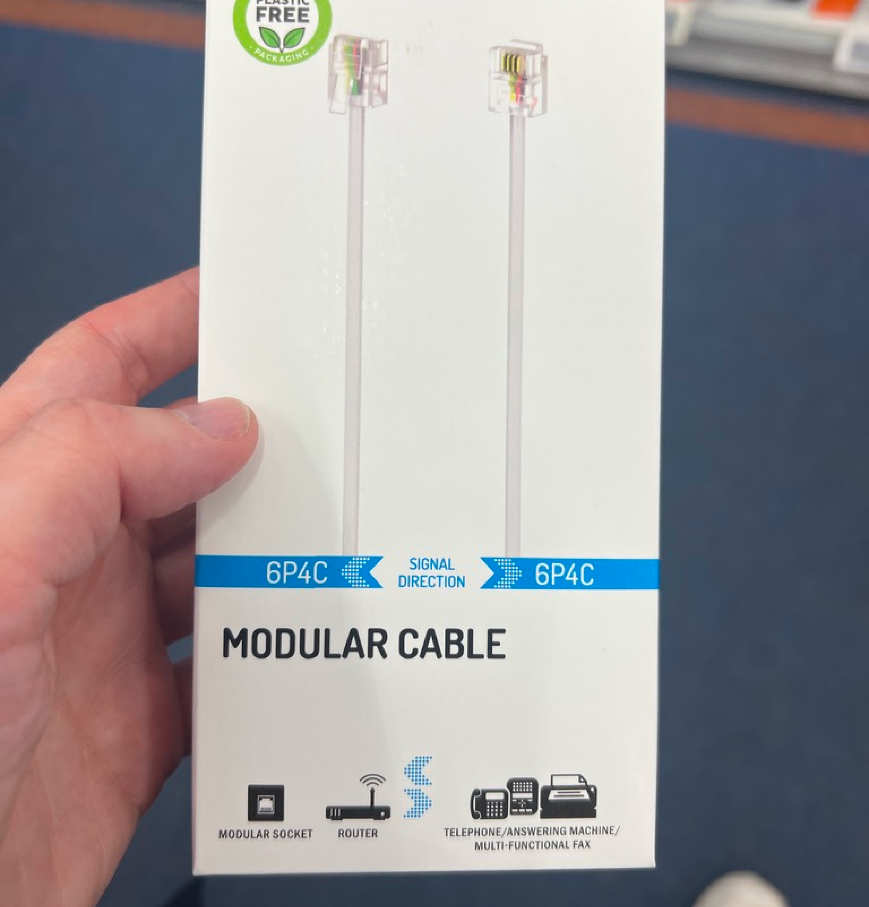
Then I replaced the handset wire with a new one. I accidentally ordered gray curly phone cable instead of a white, but decided to keep it anyway.
Before And After
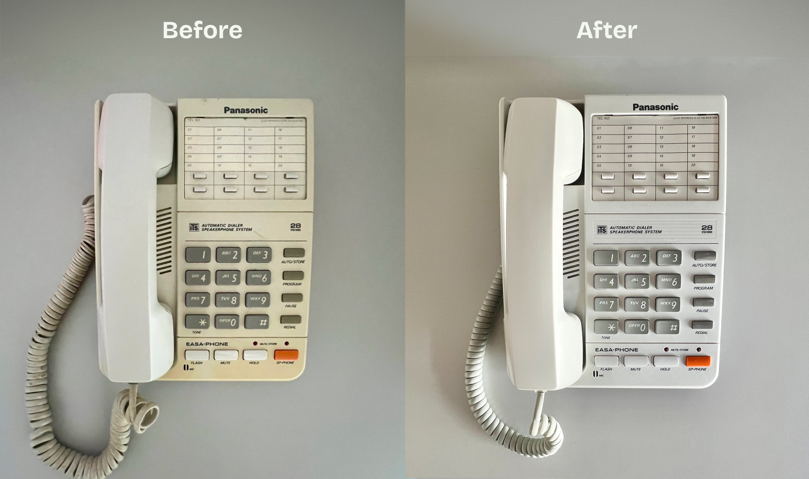
Restoration note: The Oxycreme worked well on the yellowed plastic, but it left a strong hydrogen peroxide smell mixed with fragrance. If you try this, avoid applying too much cream, rinse the parts thoroughly, and let them air out for a couple of days.
HT801 Phone Action Controller and Technical Setup
To connect the phone to the FreeBSD server, I used a Grandstream HT801V2 analog telephone adapter.
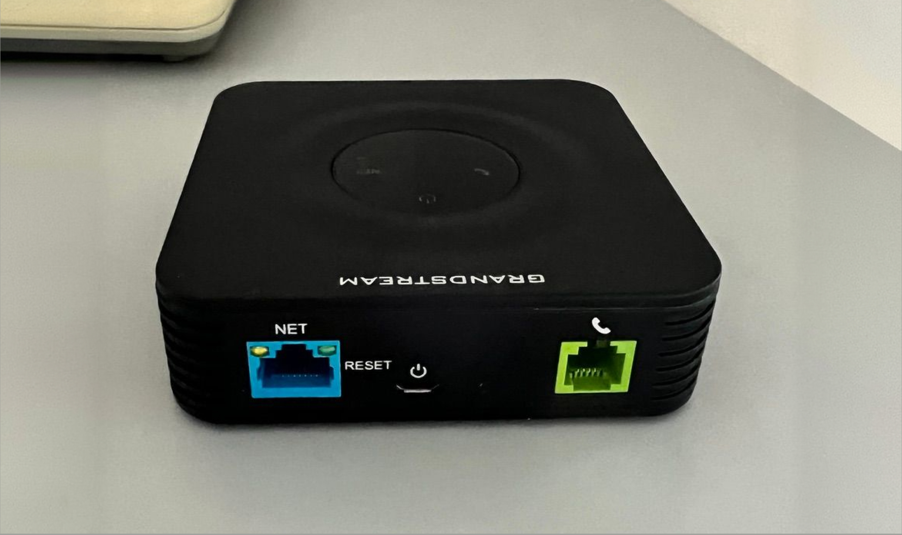
The HT801 provides an FXS port for the phone and registers with Asterisk over SIP. In fact, the HT801 can give a second life to a rotary phone as well. It works with analog telephony devices, not digital/IP phones.
This setup allows a FreeBSD host to accept SIP registration from the HT801 and run scripts when digits are sent from the connected analog phone.
The interaction is simple:
- Pick up the handset.
- The HT801 automatically dials a private menu extension.
- Asterisk answers and waits for one DTMF digit.
- Press
1,2,3, or4. - A Python AGI dispatcher maps that digit to a predefined server-side action.
- Asterisk plays a confirmation prompt or audio result.
Technical Setup: HT801, Asterisk, Dialplan, and AGI Dispatcher
The HT801 was configured through its web UI.
Important settings:
- Primary SIP Server: server IP address, VPN IP address, or hostname
- SIP User ID: YOUR_SIP_USER_ID
- Authenticate ID: YOUR_SIP_USER_ID
- Authenticate Password: the same secret from pjsip.conf
- SIP Transport: UDP
- NAT Traversal: Keep-Alive
- SIP registration: enabled
- Enable SIP OPTIONS/NOTIFY Keep Alive: OPTIONS
- Preferred DTMF: RFC2833
- Offhook Auto-Dial: YOUR_MENU_EXTENSION
- Offhook Auto-Dial Delay: 0
Asterisk Configuration
The FreeBSD 14 server used these packages:
pkg install -y asterisk20 python311
The implementation uses Asterisk with PJSIP, a Lua dialplan in extensions.lua, and a small Python AGI dispatcher.
The main files for this setup were:
/usr/local/etc/asterisk/pjsip.conf
/usr/local/etc/asterisk/extensions.lua
/usr/local/etc/asterisk/rtp.conf
/usr/local/phone-actions/phone_action_dispatcher.py
Asterisk also needs to be enabled and started:
sysrc asterisk_enable=YES
service asterisk start
After changing the configuration, either restart Asterisk or reload the relevant parts from the Asterisk CLI:
asterisk -rvvv
pjsip reload
dialplan reload
Because this example uses extensions.lua, the pbx_lua module needs to be loaded. On this FreeBSD package it was the active dialplan module for my setup. If your system is using the traditional dialplan instead, you would put the same call logic in extensions.conf.
The SIP endpoint is a single authenticated user. One detail that matters in Asterisk PJSIP is that the SIP username, endpoint name, and AOR name need to match for inbound registration. Inbound registration matches the To user in the SIP REGISTER request against the AOR name.
This is the important part of my pjsip.conf:
[transport-udp]
type=transport
protocol=udp
bind=YOUR_ASTERISK_LISTEN_ADDRESS:5060
local_net=YOUR_LAN_CIDR
[YOUR_SIP_USER_ID-auth]
type=auth
auth_type=userpass
username=YOUR_SIP_USER_ID
password=CHANGE_ME_STRONG_SECRET
[YOUR_SIP_USER_ID]
type=aor
max_contacts=1
remove_existing=yes
qualify_frequency=60
[YOUR_SIP_USER_ID]
type=endpoint
context=phone-actions
transport=transport-udp
disallow=all
allow=ulaw,alaw
auth=YOUR_SIP_USER_ID-auth
aors=YOUR_SIP_USER_ID
dtmf_mode=rfc4733
direct_media=no
rtp_symmetric=yes
force_rport=yes
rewrite_contact=yes
language=en
The NAT-related settings were needed because the HT801 was registering from outside the server’s local network. force_rport and rewrite_contact help Asterisk reply to the address and port the ATA is actually using, and rtp_symmetric helps RTP audio flow back through the same NAT path. If your adapter and server are on the same LAN or VPN, you can usually make this tighter.
SIP is not the only network traffic involved. The phone call signaling uses UDP 5060 here, but the audio path uses RTP as well. The RTP range is configured in rtp.conf. If you run a firewall, allow SIP and the Asterisk RTP port range only from trusted addresses, such as your LAN, VPN, or the ATA address. A better setup is to keep SIP and RTP reachable only over LAN or VPN rather than exposing UDP 5060 to the public internet.
To check whether the ATA registered successfully, I used the Asterisk CLI:
asterisk -rvvv
pjsip show contacts
pjsip show endpoints
The SIP password should be a long, unique random value. Do not reuse a Unix account password, router password, or any password from another service. YOUR_SIP_USER_ID is only the SIP endpoint name used by the ATA and Asterisk; it is not a FreeBSD user account.
Dialplan
On this FreeBSD Asterisk package, the active dialplan was pbx_lua, so the call logic lives in extensions.lua rather than extensions.conf.
The dialplan answers the private menu extension, reads one digit, calls the AGI dispatcher with that digit, and then plays the result selected by the dispatcher.
Here is a shortened version:
local valid_digits = {
["1"] = true,
["2"] = true,
["3"] = true,
["4"] = true,
}
local function execute_selection(selection)
if not valid_digits[selection] then
app.playback("invalid")
return false
end
app.answer()
app.agi("/usr/local/phone-actions/phone_action_dispatcher.py", selection)
local status = channel.ACTION_STATUS:get()
if status == "ok" then
local prompt = channel.ACTION_PROMPT:get()
if prompt ~= nil and prompt ~= "" then
app.playback(prompt)
else
app.playback("beep")
end
app.hangup()
return true
end
app.playback("invalid")
return false
end
local function action_menu()
app.answer()
channel.TIMEOUT("response"):set(5)
app.read("SELECTION", "beep", 1, "", 1, 5)
local selection = channel.SELECTION:get()
if selection == nil or selection == "" then
app.playback("vm-goodbye")
app.hangup()
return
end
if execute_selection(selection) then
return
end
return action_menu()
end
extensions = {
["phone-actions"] = {
["YOUR_MENU_EXTENSION"] = action_menu;
};
}
AGI Dispatcher
The dispatcher is a Python script launched by Asterisk. Its job is deliberately narrow:
- accept exactly one digit
- reject anything that is not a single digit
- map allowed digits to fixed actions
- run scripts without shell interpolation
- set Asterisk channel variables so the dialplan knows what to play next
- log the action result
The important safety choice is the whitelist. I do not build a command from keypad input. This shortened example shows the two simplest actions; my full dispatcher also handles 3 for voice message recordings and 4 for the news reader.
#!/usr/bin/env python3.11
SCRIPT_DIR = Path("/usr/local/phone-actions")
ACTION_MAP = {
"1": SCRIPT_DIR / "one.py",
"2": SCRIPT_DIR / "two.py",
}
def run_action_script(digit: str) -> int:
script_path = ACTION_MAP.get(digit)
if script_path is None:
LOGGER.warning("Rejected unmapped digit '%s'", digit)
set_channel_variable("ACTION_STATUS", "fail")
return 1
if not script_path.is_file():
LOGGER.error("Mapped script for digit %s does not exist: %s", digit, script_path)
set_channel_variable("ACTION_STATUS", "fail")
return 1
completed = subprocess.run(
[str(script_path)],
check=False,
capture_output=True,
text=True,
timeout=30,
)
if completed.returncode == 0:
set_channel_variable("ACTION_STATUS", "ok")
else:
set_channel_variable("ACTION_STATUS", "fail")
return completed.returncode
Passing a list to subprocess.run() and leaving shell=False as the default means the digit cannot become shell syntax. The timeout also matters: if a script hangs, the AGI process should not wait forever.
The dispatcher itself has to be executable by the Asterisk service user, while the directory and scripts should be writable only by a trusted admin account. In other words, Asterisk needs enough permission to run the dispatcher and action scripts, but it should not need broad write access to the directory that contains them.
When an AGI script talks back to Asterisk, it must write valid AGI commands to standard output. In the full dispatcher, set_channel_variable() prints SET VARIABLE commands and reads the Asterisk response before returning control to the Lua dialplan.
For prompts, Asterisk Playback() uses sound names rather than full filenames with extensions. Generated audio may also need to be converted to a telephony-friendly format that your Asterisk installation can play, depending on which format modules are installed.
For the news action, I use an OpenAI API key from a root-readable config file rather than hard-coding it in the script.
Once the ATA successfully registered, lifting the handset immediately entered the action menu.
Results
The final result is a phone-driven control interface:
- Pick up the handset.
- Press a digit.
- Trigger a script on the FreeBSD server.
- Right now, button
4runs a script that reads the latest FreeBSD news and generates a text-to-speech audio file which is played back at 1.2× speed.
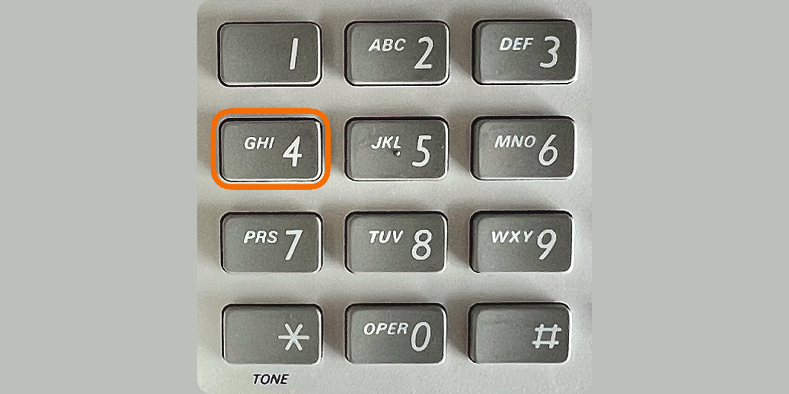
Take a listen:
Further Plans
First, I want to set up FreeBSD to call me back. I am thinking about connecting a calendar to the server so it can call me and tell me what the meeting is about and what I need to prepare. The same idea could work for other alerts from the server itself.
Second, I want to build a local LLM so I can talk to the server by voice. The privacy advantage is that the phone starts listening only after I pick up the handset. That is very different from a smart speaker that is always waiting for a wake word and who knows what else is being sent to a remote server.
And I just finished working on a system that allows me to call, then press a button to start recording a voice message. Then, the local LLM converts it to text and sends it back to me via email when it’s ready.
Full Config
The complete Markdown config file includes the HT801 settings, Asterisk setup, Lua dialplan, and Python dispatcher notes in one place.
Download the full FreeBSD phone action controller config as a .md file.